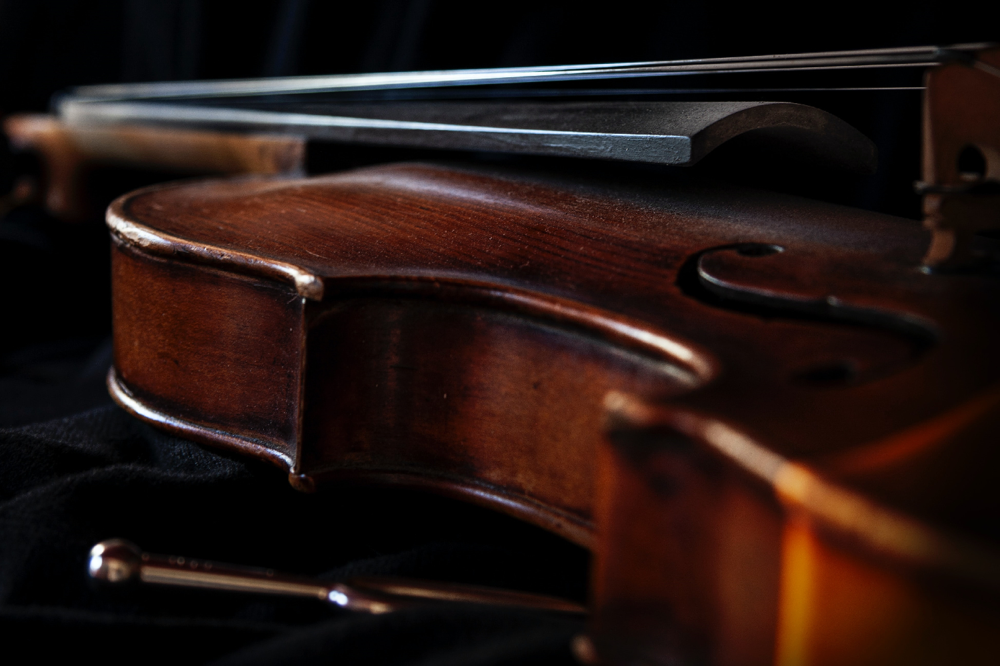
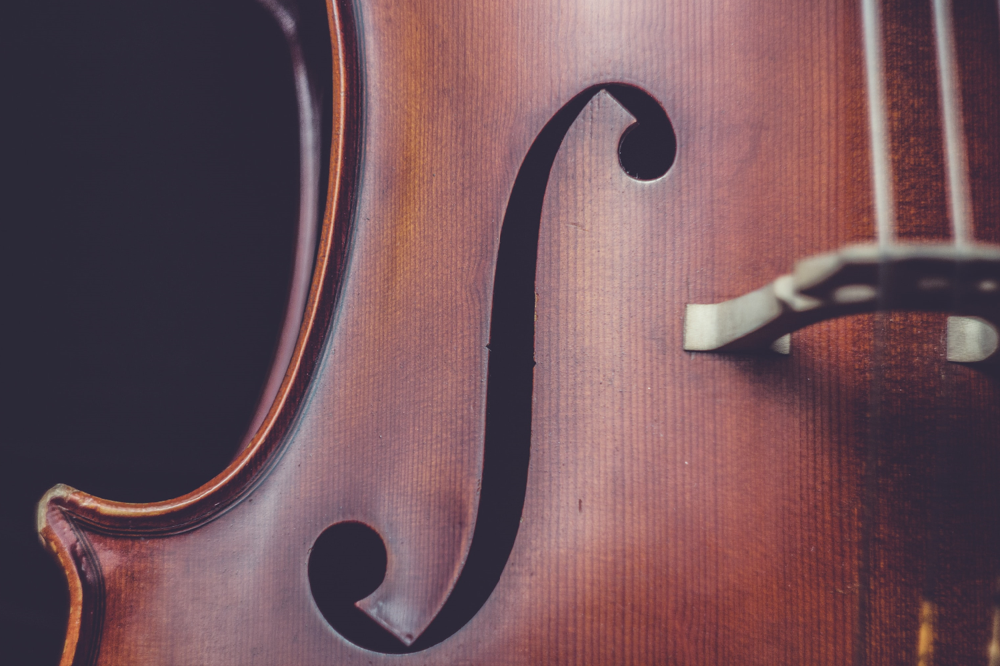

Violin
The violin is a bowed stringed instrument which gained popularity during the 16th century. The violin is known for its unique vocal quality and is often the focus in many symphony orchestras.
 Piano
Piano
A popular and versatile instrument, the piano is one of the best choices for beginners because of its simplicity. Many people know famous composers
and songs for the piano.
 Trombone
Trombone
A brass instrument that requires excellent command of embouchure and breathing. It has a deep tone that makes it desirable in in symphony orchestras, jazz bands, and more.

Viola
While similar in appearance to the violin, the viola acts as the sweeter inner voice of any orchestra.
 Guitar
Guitar
The guitar is a portable instrument perfect for solos and performances. It is fashionable and great to learn and play.

Cello
The cello is a low-pitched string instrument popular for its rich and warm tones. Its contrast to the violin and viola make it
an excellent companion to its higher pitched siblings.
Beginner Music Theory
Music theory is a key part in understanding the music that we all love to listen to and play.
Learning music theory will allow the student to recognize the patterns that are in music, as well as
have the opportunity to create their own compositions.